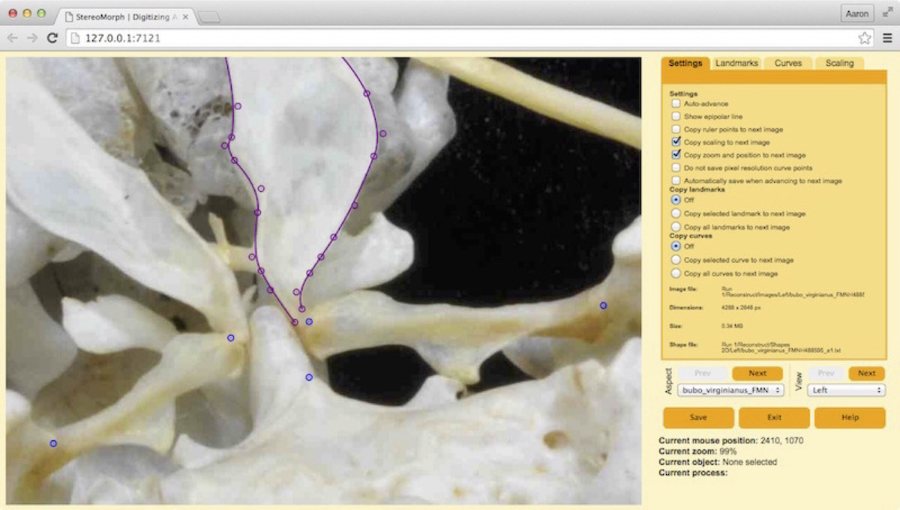

7.2 Digitizing photographs
Once you have captured stereo images or video you can use the StereoMorph digitizing application to manually identify landmarks or curves that you want to reconstruct into 3D. Currently, StereoMorph doesn't have any automated feature recognition tools (except the checkerboard detection). But the digitizing application provides a user-friendly interface for identifying features yourself. This can be useful for features that would be otherwise difficult to identify or reconstruct automatically. The application is launched from R but runs in your default web browser (you do not need to be connected to the internet to launch the app since it runs on an internal server). The app is fully functional across Safari, Chrome, Firefox and Opera.
Once you have a set of images from two or more camera views you can use the StereoMorph digitizing application to manually identify the features that you want to reconstruct into 3D. We used this application in a previous section to precisely measure the square size of a checkerboard. If you'd like to work through the example below, you can download an example set of stereo images here (4 MB). Unzip this folder and move the folder contents to your current R working directory.
1. Load the StereoMorph library if it isn't already loaded.
# Load the StereoMorph package library(StereoMorph)
2. Launch the digitizing application using the digitizeImages() function.
# Launch the digitizing application digitizeImages(image.file='Images', shapes.file='Shapes 2D', landmarks.ref='landmarks.txt', curves.ref = 'curves.txt', cal.file='calibration.txt')
3. These are the basic input parameters to digitizeImages() when using the app to digitize stereo image sets (refer to this stereo image set for an example):
- image.file: A folder containing the images to be digitized, separated into a folder for each view.
- shapes.file: A folder where the shape data will be saved. If this does not exist it will be created automatically with the same sub-folders as image.file.
- landmarks.ref: A .txt file or vector listing the names of the landmarks to be digitized. Landmark names should only contain letters, numbers and underscores (no spaces). If the input is a .txt file, each name should be on a separate line (see this example file).
- curves.ref: (Optional) A .txt file listing the names of the curves to be digitized with the start and end points of each curve. If not digitizing curves this can be omitted. These names should only contain letters, numbers and underscores (no spaces). Each curve should be on a separate line, with the curve name, start, and end point separated by tabs (see this example file).
- cal.file: The calibration file created by calibrateCameras(). The DLT coefficients in this file will be used to draw the epipolar line onto the image when digitizing landmarks.
The left two-thirds of the app are the image frame. This is where you can navigate around the image and add landmarks and curves using your mouse or trackpad. The right two-thirds are the control panel, for viewing and saving landmark/curve lists and navigating between images. There are four tabs in the control panel: Settings, Landmarks, Curves, and Scaling. The Settings tab contains different user-interaction options. These options will be saved using cookies so they do not have to be reset every time you open the digitizing app. The Landmarks and Curves tabs contain the pixel coordinates of all digitized landmarks and curve points. The Scaling can be ignored for stereo sets - it's used to scale coordinate data for 2D morphometrics.
You can navigate around the image in the image frame using the same basic mouse actions as in Google Maps. You can zoom in and out by positioning your cursor over the image and scrolling. To move around the image click and drag the image.
